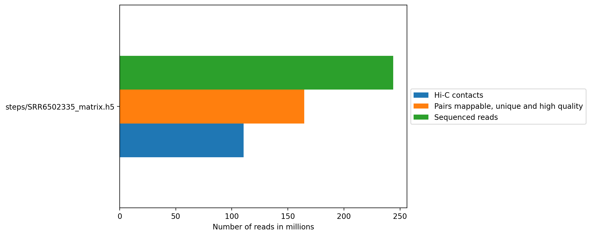
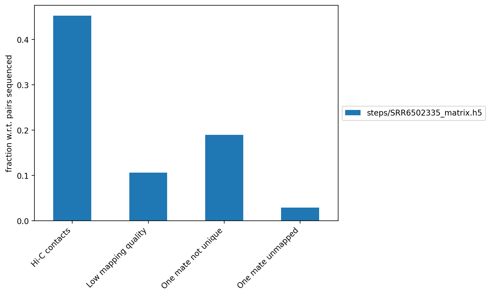
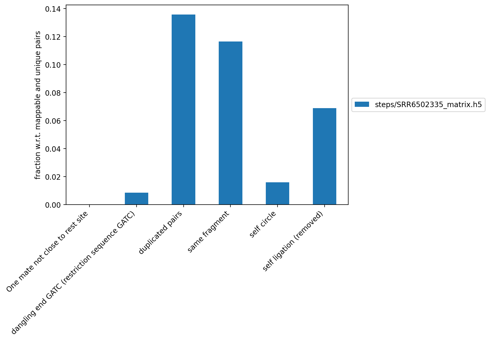
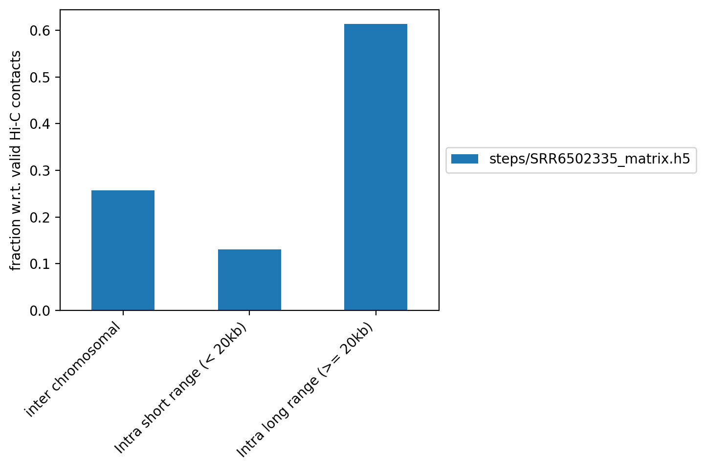
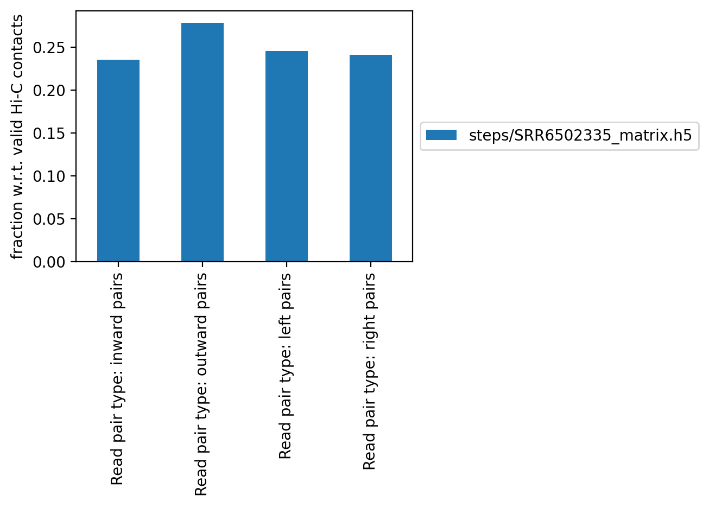

HiCExplorer QC report
Pairs sequenced
Unmappable and non-unique pairs
This figure contains the fraction of reads, with respect to the total number of reads, that did not map, that have a low quality score or that didn't map uniquely to the genome.
Unmappable and non-unique table
| Hi-C contacts | Hi-C contacts_% | Low mapping quality | Low mapping quality_% | One mate not unique | One mate not unique_% | One mate unmapped | One mate unmapped_% | |
|---|---|---|---|---|---|---|---|---|
| File | ||||||||
| steps/SRR6502335_matrix.h5 | 110,459,727 | 45.27% | 25,966,189 | 10.64% | 46,247,666 | 18.95% | 7,074,456 | 2.90% |
Pairs discarded
This figure contains the fraction read pairs (with respect to mappable reads) that were discarded when building the Hi-C matrix.
- Dangling ends
- These are reads that start with the restriction site and constitute reads that were digested but no ligated.
- Same fragment
- These are read mates, facing inward, separated by up to 800 bp that do not have a restriction enzyme in between. These read pairs are not valid Hi-C pairs
- Self circle
- self circles are defined as pairs within 25kb with 'outward' read orientation
- Self ligation
- These are read pairs with a restriction site in between that are within 800 bp.
Discarded pairs table
| One mate not close to rest site | One mate not close to rest site % | dangling end GATC (restriction sequence GATC) % | duplicated pairs | duplicated pairs % | same fragment | same fragment % | self circle | self circle % | self ligation (removed) | self ligation (removed) % | |
|---|---|---|---|---|---|---|---|---|---|---|---|
| File | |||||||||||
| steps/SRR6502335_matrix.h5 | 0.00% | 0.00% | 0.85% | 22,354,822 | 13.57% | 19,171,395 | 11.64% | 2,625,919 | 1.59% | 11,329,456 | 6.88% |
Contact distance
Contact distance table
| inter chromosomal | inter chromosomal % | Intra short range (< 20kb) | Intra short range (< 20kb) % | Intra long range (>= 20kb) | Intra long range (>= 20kb) % | |
|---|---|---|---|---|---|---|
| File | ||||||
| steps/SRR6502335_matrix.h5 | 28,350,411 | 25.67% | 14,384,188 | 13.02% | 67,725,128 | 61.31% |
Read orientation
Read orientation table
| Read pair type: inward pairs | Read pair type: inward pairs % | Read pair type: outward pairs | Read pair type: outward pairs % | Read pair type: left pairs | Read pair type: left pairs % | Read pair type: right pairs | Read pair type: right pairs % | |
|---|---|---|---|---|---|---|---|---|
| File | ||||||||
| steps/SRR6502335_matrix.h5 | 19,296,696 | 23.50% | 22,871,961 | 27.86% | 20,163,554 | 24.56% | 19,777,105 | 24.09% |
Number of reads table
| Sequenced reads | Pairs mappable, unique and high quality | Hi-C contacts | One mate unmapped | One mate not unique | Low mapping quality | dangling end GATC (restriction sequence GATC) | self ligation (removed) | One mate not close to rest site | same fragment | self circle | duplicated pairs | inter chromosomal | Intra short range (< 20kb) | Intra long range (>= 20kb) | Read pair type: inward pairs | Read pair type: outward pairs | Read pair type: left pairs | Read pair type: right pairs | |
|---|---|---|---|---|---|---|---|---|---|---|---|---|---|---|---|---|---|---|---|
| File | |||||||||||||||||||
| steps/SRR6502335_matrix.h5 | 244003806 | 164715495 | 110459727 | 7074456 | 46247666 | 25966189 | 1400095 | 11329456 | 0 | 19171395 | 2625919 | 22354822 | 28350411 | 14384188 | 67725128 | 19296696 | 22871961 | 20163554 | 19777105 |